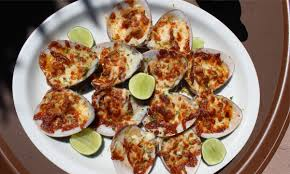

3.Baja California Sur

- Platillo: Almejas chocolatas tatemadas
- Ingredientes: Almejas grandes, hierbas de olor, carbón o leña, cebolla, chile serrano.
- Historia: Plato ancestral de pescadores cochimíes y pericúes, preparado a la orilla del mar.
- Dato curioso: Se cocinan directamente sobre brasas, envueltas en su propia concha.